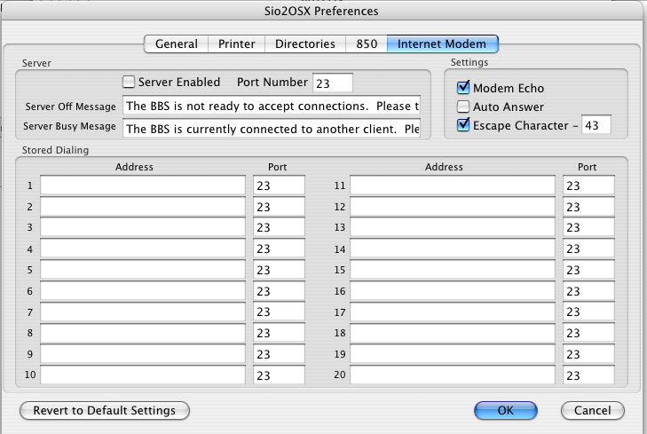

This tab allows the user to configure the settings of the Internet
Modem simulation.

Server Settings:
Server
Enable and Port
This option allows you to chose if the server is enable for the modem
(allows incoming connections) and which TCP port it uses (23 is the
default for telnet) if enabled.
Server Off Message
This option allows you to set the message that is sent to a remote
telnet client when it tries to connect to the server and the Atari is
not ready to accept connections (It's DTR line is not raised).
Server Busy Message
This option allows you to set the message that is sent to a remote
telnet client when it tries to connect to the server and the Atari is
already connect to another client or server.
Internal
Modem Settings:
These settings are used to control the defaults that the modem is set
to when powered on, or when it receives the ATZ command to reset.
Modem
Echo
This option is used to turn the echo of characters from the
modem on or off. With Echo on, the modem will echo all characters
it receives from the computer back to the computer, so one can see what
one types. The default for Echo is on,.
AutoAnswer
This option is used to determine if the modem automatically answers
incoming connections (by going to data mode), or if the ATA command is
required to be issued to answer the call. The default for Auto
Answer is off.
Escape
Character
This option is used to set the character for the escape sequence that
takes the modem from data mode to command mode. The default is
enabled and 43, which is the '+' character, so that "+++" will be the
escape sequence. When disabled, the character is set to 255.
Stored Dialing Settings:
Address
and Port
These options are used to store internet addresses and ports
for later use in dialing with the ATDP command. (See the
description of modem commands on the
850
Emulation page.